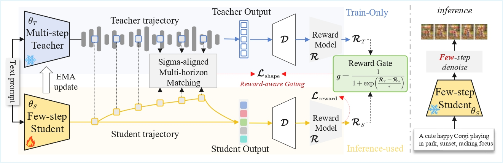
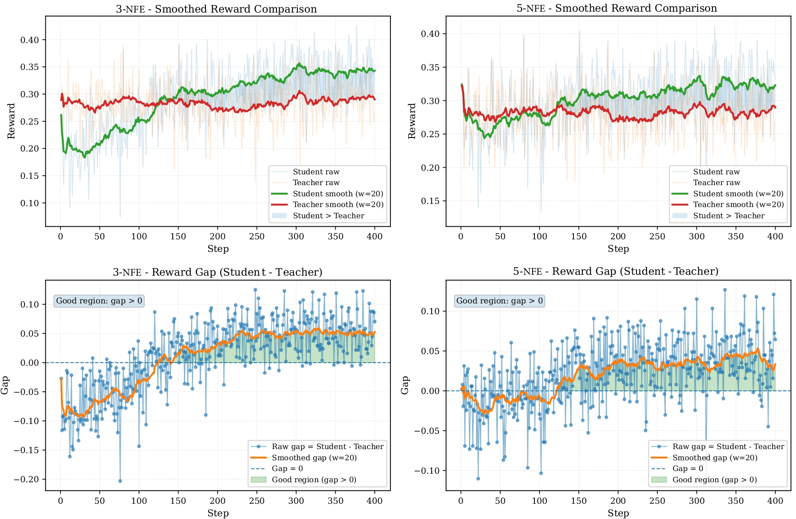
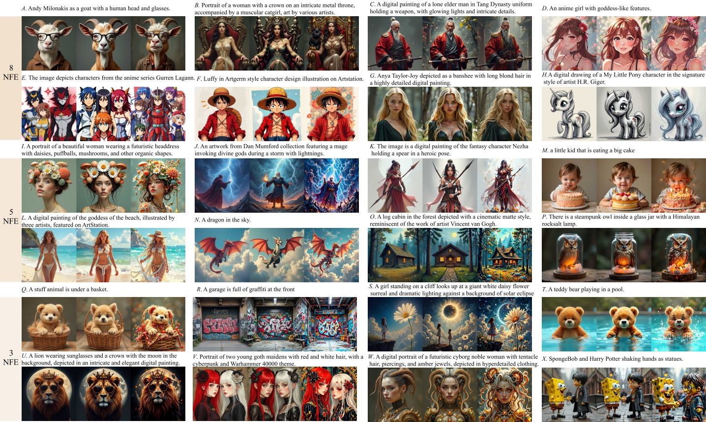
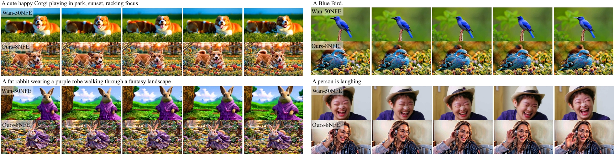

Horizon Matching
Aligns teacher and student latent trajectories across key denoising stages under compressed step budgets.
Preference-aligned few-step image and video generation without test-time overhead.
University of Science and Technology of China | TeleAI
* Equal contribution
Achieving high-fidelity generation in extremely few sampling steps has long been a central goal of generative modeling. Existing approaches largely rely on distillation-based frameworks to compress the original multi-step denoising process into a few-step generator. However, such methods constrain the student to imitate a stronger multi-step teacher, imposing the teacher as an upper bound on student performance.
We propose Reward-Aware Trajectory Shaping (RATS), a lightweight framework for preference-aligned few-step generation. Teacher and student latent trajectories are aligned at key denoising stages through horizon matching, while a reward-aware gate adaptively regulates teacher guidance based on relative reward performance. RATS improves the efficiency-quality trade-off in few-step visual generation while preserving the deployment efficiency of the student model.
Aligns teacher and student latent trajectories across key denoising stages under compressed step budgets.
Strengthens teacher guidance when the teacher is more reward-preferred and relaxes it when the student catches up.
Uses the multi-step EMA teacher only during training, adding no computational overhead at test time.


Experiments show that RATS consistently improves the efficiency-quality frontier, narrowing the gap between few-step students and stronger multi-step generators for both image and video generation.


@article{li2026rats,
title = {Reward-Aware Trajectory Shaping for Few-step Visual Generation},
author = {Li, Rui and Li, Bingyu and Liang, Yuanzhi and Huang, Haibin and Zhang, Chi and Li, XueLong},
journal = {arXiv preprint arXiv:2604.14910},
year = {2026}
}